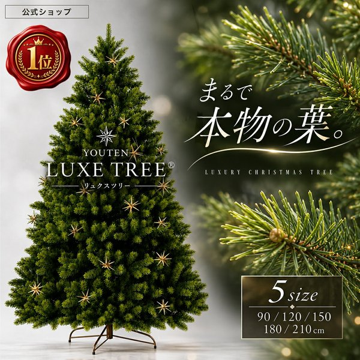
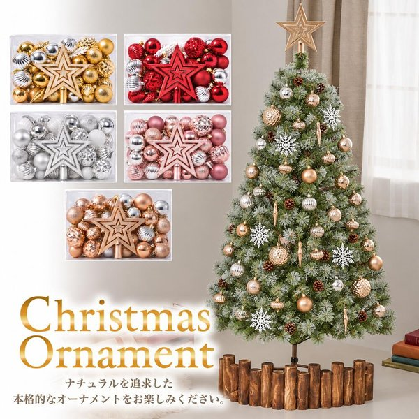
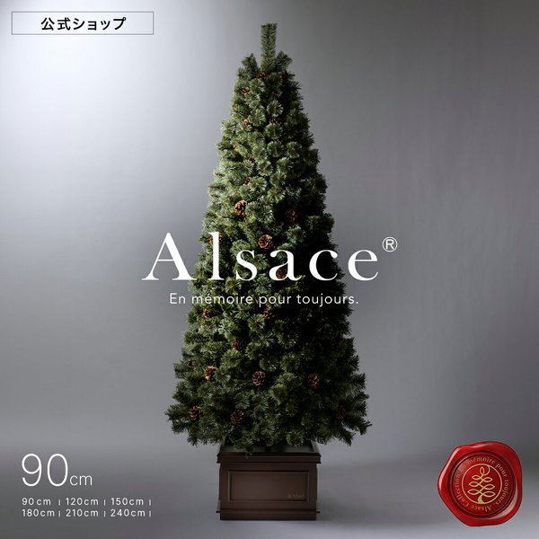
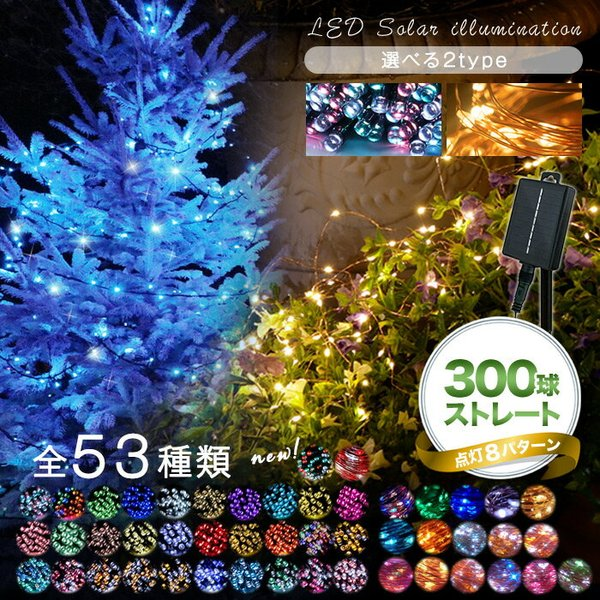
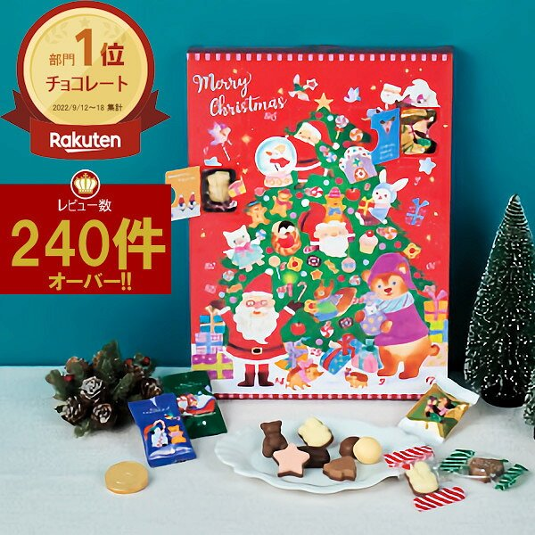
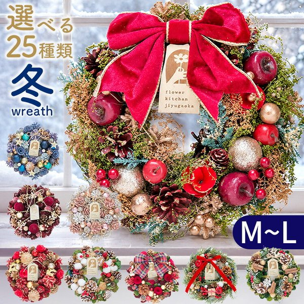
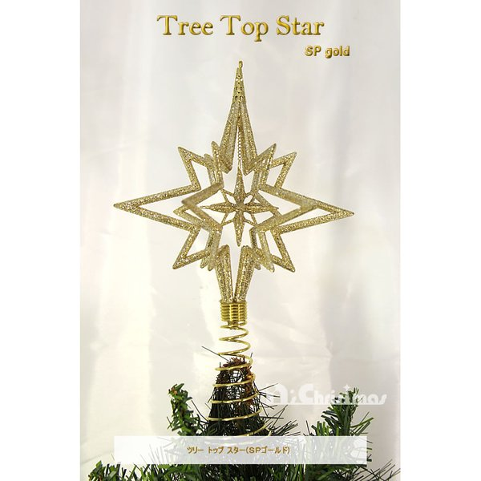
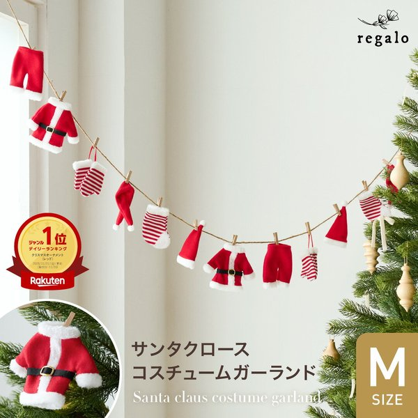
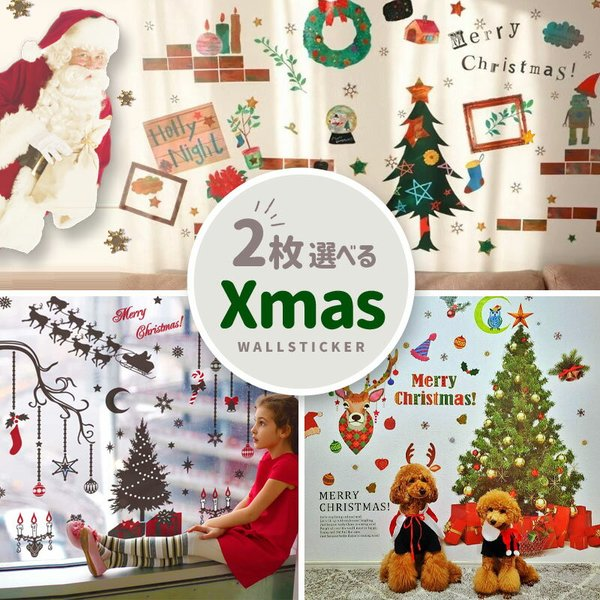
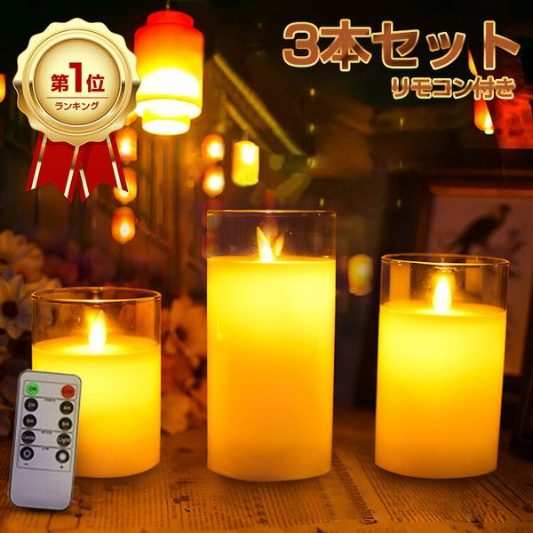

【2026年クリスマス】家族・おうちで楽しむ！おしゃれクリスマスツリー・アドベントカレンダー・LEDイルミネーション＆冬装飾10選
クリスマスは、外に出かけるより家で過ごす人のほうが増えました。だからこそ、部屋をどう飾るかで12月の気分が変わります。飾りは一度買えば毎年使えるので、1年目に揃えておくと、翌年からは出すだけになります。
選ぶ軸は、置く場所の広さ、毎年出せるか、そして子どもと一緒に飾れるかです。ツリーは90cmの卓上サイズなら棚の上に置けて、部屋の模様替えをしなくて済みます。オーナメントはセットで揃えると、1本のツリーに必要な飾りが一度に手に入ります。イルミネーションはコンセントの要らないソーラー式なら、ベランダや玄関にも設置できます。アドベントカレンダーは12月1日から毎日1つ開けるので、子どもがいる家ほど効果があります。リースやガーランド、ウォールステッカーは、ツリーを出さない年でも季節感を出せる飾りです。
本記事では、楽天市場で人気・高評価のクリスマス飾り10選を、実売価格とレビュー評価つきで写真付き紹介します。
- おすすめ10選 スペック・特徴比較表
- BEST 1｜クリスマスツリー ベツレヘム 北欧 高級タイプ（90〜210cm・5サイズ）
- BEST 2｜クリスマス オーナメント 66個セット（ボール・モール・リボン）
- BEST 3｜クリスマスツリー 90cm ドイツトウヒ 高級タイプ（2026ver.）
- BEST 4｜イルミネーション 屋外 ソーラー 300球 ストレートライト
- BEST 5｜メリーチョコレート クリスマススイーツカレンダー 26個入り（アドベントカレンダー）
- BEST 6｜クリスマスリース M／L 選べる25種（ドライフラワー・玄関用）
- BEST 7｜クリスマス オーナメント ツリートップスター（SPゴールド）
- BEST 8｜クリスマス ガーランド サンタの服 180cm（壁掛け飾り）
- BEST 9｜クリスマス 飾り ウォールステッカー 2枚セット（はがせるタイプ）
- BEST 10｜LED キャンドルライト ガラス 3本セット（リモコン付・炎が揺れる）
- 【読者負担0円】買わなくても得する無料サービス
- まとめ：クリスマス飾り10選の選び方
| 順位 | 商品名 | ブランド | 最大の特徴・おすすめ理由 | 総合評価 |
|---|---|---|---|---|
| BEST 1 | クリスマスツリー ベツレヘム 北欧 高級タイプ（90〜210cm・5サイズ） | Luxe（ルクス） | 90〜210cmの5サイズ | 4.59 |
| BEST 2 | クリスマス オーナメント 66個セット（ボール・モール・リボン） | オーナメント 専門店 | 66個入りでツリー1本分が揃う | 4.47 |
| BEST 3 | クリスマスツリー 90cm ドイツトウヒ 高級タイプ（2026ver.） | Alsace（アルザス） | 90cmで置き場所を選ばない | 4.62 |
| BEST 4 | イルミネーション 屋外 ソーラー 300球 ストレートライト | イルミネーション 専門店 | コンセント不要のソーラー式 | 4.36 |
| BEST 5 | メリーチョコレート クリスマススイーツカレンダー 26個入り（アドベントカレンダー） | メリーチョコレート | 12月1日から1日1個 | 4.65 |
| BEST 6 | クリスマスリース M／L 選べる25種（ドライフラワー・玄関用） | リース 専門店 | 25種からデザインを選べる | 4.42 |
| BEST 7 | クリスマス オーナメント ツリートップスター（SPゴールド） | ツリー専門店（創業70年） | ツリーの頂点が1つで決まる | 4.76 |
| BEST 8 | クリスマス ガーランド サンタの服 180cm（壁掛け飾り） | インテリア 雑貨店 | 180cmで壁一面に渡せる | 4.81 |
| BEST 9 | クリスマス 飾り ウォールステッカー 2枚セット（はがせるタイプ） | ウォールステッカー 専門店 | はがせるタイプで賃貸でも使いやすい | 4.53 |
| BEST 10 | LED キャンドルライト ガラス 3本セット（リモコン付・炎が揺れる） | LEDキャンドル 専門店 | 火を使わないLED式 | 4.53 |
クリスマスツリー ベツレヘム 北欧 高級タイプ（90〜210cm・5サイズ）

葉の密度を上げた北欧風のクリスマスツリー。90cmから210cmまで5サイズ展開で、部屋の天井高に合わせて選べます。枝がしっかりしているので、オーナメントを掛けても垂れ下がらず、ツリーの形が崩れません。組み立ては幹に枝を差し込む方式で、しまうときは同じ箱に戻せるため、翌年も同じ形で出せます。楽天市場での実売価格は約11,800円（2026年11月時点）。
- 90〜210cmの5サイズ
- 枝が密でオーナメントが映える
- レビュー396件・評価4.59
- 180cm以上は存在感が大きいので、設置場所の幅を測ってから選ぶ
クリスマス オーナメント 66個セット（ボール・モール・リボン）

ボールやモール、リボンなどをまとめた66個のオーナメントセット。1袋でツリー1本分の飾りが揃うので、オーナメントを1つずつ買い足す手間がありません。ラメが落ちにくい加工で、しまうときに袋へ戻しても部屋がキラキラになりません。色を統一したい年は同系色を多めに入れ、子どもと飾る年は全部使う、という使い分けができます。楽天市場での実売価格は約3,999円（2026年11月時点）。
- 66個入りでツリー1本分が揃う
- ラメが落ちにくい加工
- レビュー720件・評価4.47
- 個数が多いぶん、収納袋を別に用意しておく
クリスマスツリー 90cm ドイツトウヒ 高級タイプ（2026ver.）

ドイツトウヒの葉を再現した90cmのツリー。卓上に置ける高さで、リビングの棚の上や玄関のニッチにも収まります。枝数が多いので、小ぶりのオーナメントでも隙間が目立ちません。1本あるだけで部屋の印象が変わるので、大きなツリーを出すほどではない年の「省スペース飾り」に向いています。楽天市場での実売価格は約8,980円（2026年11月時点）。
- 90cmで置き場所を選ばない
- 枝数が多く隙間が出にくい
- レビュー337件・評価4.62
- 90cmだとオーナメントは小ぶりのものを選ぶとバランスが取れる
イルミネーション 屋外 ソーラー 300球 ストレートライト

太陽光で充電して自動で点灯する屋外向けのイルミネーション。300球のLEDが8パターンで点滅し、コンセントの届かないベランダや玄関アプローチにも設置できます。配線を引き回さないので、設置も片付けも数分で済みます。日が落ちると勝手に光るため、帰宅が遅い日でも点灯を忘れません。楽天市場での実売価格は約1,080円（2026年11月時点）。
- コンセント不要のソーラー式
- 300球・8パターン点灯
- レビュー2,030件・評価4.36
- 曇りの日が続くと点灯時間が短くなる
メリーチョコレート クリスマススイーツカレンダー 26個入り（アドベントカレンダー）

12月1日から1日1個ずつ開けられる、チョコレートのアドベントカレンダー。26個入りで、窓を開けると個包装のチョコが出てきます。子どもが毎朝起きる理由になるのはもちろん、大人も12月の楽しみが1つ増えます。飾っておけるパッケージなので、クリスマスまでのカウントダウンを部屋の一部にできます。楽天市場での実売価格は約2,180円（2026年11月時点）。
- 12月1日から1日1個
- 26個入りで余裕がある
- レビュー244件・評価4.65
- 開封後は暖房の当たらない場所に置く
クリスマスリース M／L 選べる25種（ドライフラワー・玄関用）

25種類からデザインとサイズを選べるクリスマスリース。玄関ドアに掛けるだけで、家の外観が一気に季節仕様になります。ドライフラワーを使ったタイプは、松ぼっくりや実の質感が残り、毎年出しても形が崩れにくいです。MとLの2サイズあるので、ドアの幅に合わせて選べます。楽天市場での実売価格は約3,250円（2026年11月時点）。
- 25種からデザインを選べる
- M・Lの2サイズ
- レビュー771件・評価4.42
- 屋外に掛ける場合は、雨が直接当たらない位置のほうが長持ちする
クリスマス オーナメント ツリートップスター（SPゴールド）

クリスマスツリー専門店が扱う、ツリーの頂点に付けるスター。ゴールドの光沢があり、ツリーのてっぺんが決まるだけで全体の印象が締まります。取付は枝に差し込むだけなので、毎年同じ位置に付けられます。オーナメントを増やさずに、1つで見栄えを変えたいときに向いています。楽天市場での実売価格は約1,540円（2026年11月時点）。
- ツリーの頂点が1つで決まる
- ゴールドの光沢で存在感がある
- レビュー63件・評価4.76
- 重さがあるため、細い枝のツリーでは根本を支える
クリスマス ガーランド サンタの服 180cm（壁掛け飾り）

サンタの服をモチーフにしたフェルトのガーランド。180cmあるので、リビングの壁や窓の上部に渡すだけで、部屋全体がクリスマスらしくなります。ツリーを出さない年でも、これ1本で季節感が出るのが利点です。軽いので画鋲やフックで留められ、壁に傷を付けにくいです。楽天市場での実売価格は約2,380円（2026年11月時点）。
- 180cmで壁一面に渡せる
- ツリーなしでも季節感が出る
- レビュー75件・評価4.81
- フェルトなので、洗わずに払う程度の手入れにする
クリスマス 飾り ウォールステッカー 2枚セット（はがせるタイプ）

壁に貼って、はがせるクリスマスのウォールステッカー。2枚セットで、ツリーの形やオーナメント、文字を組み合わせて貼れます。窓や玄関の扉にも使え、賃貸でも原状回復の心配が少ないのが選びやすいところです。子どもと一緒に貼る作業そのものが、12月のイベントになります。楽天市場での実売価格は約2,980円（2026年11月時点）。
- はがせるタイプで賃貸でも使いやすい
- 2枚セットで自由にレイアウト
- レビュー978件・評価4.53
- 貼る前に、壁のホコリを拭き取っておく
LED キャンドルライト ガラス 3本セット（リモコン付・炎が揺れる）

本物の炎のように揺れるLEDキャンドルの3本セット。ガラスの器に入っていて、火を使わないため、小さい子どもやペットがいる家でもテーブルに置けます。リモコンで点灯と明るさを変えられ、タイマーを設定すれば決まった時間に灯ります。クリスマスディナーのテーブルに3本並べるだけで、部屋の明かりを落として過ごしたくなります。楽天市場での実売価格は約2,580円（2026年11月時点）。
- 火を使わないLED式
- リモコンとタイマー付き
- レビュー140件・評価4.53
- 電池式なので、12月に入る前に電池を用意しておく
この記事の商品を買う前に、まずは無料で得する選択肢をチェック。どれも登録・利用は0円で、無料期間中に解約すれば料金はかかりません。読みたい雑誌がある人、ポイントを貯めたい人、アンケートなら気軽という人、それぞれに合うものを選べます。
初回31日無料・無料期間中に解約すれば0円 → 楽天ポイントモール｜登録無料で毎日ポイ活
買い物なしでもポイントが貯まる無料サービス → 楽天インサイト｜アンケートに答えてポイント
登録無料・すきま時間のアンケートで貯まる → 楽天カード｜年会費永年無料
新規発行・年会費ずっと0円 →
4つのサービスの違いと使い分けは「出費0円で得する！買わずにポイントが貯まる無料サービス厳選4選」でまとめています。
💡 まとめ：クリスマス飾り10選の選び方
クリスマスの飾りは、12月に入ってから慌てて買うと、人気のデザインから売り切れます。ツリーは置く場所の高さを測り、90cmか150cm以上かを先に決めておくと迷いません。オーナメントはセットで買い、リースとガーランドで玄関と壁を飾ると、部屋全体が同じ雰囲気にまとまります。イルミネーションはコンセントの位置を確認し、届かない場所にはソーラー式を選んでください。アドベントカレンダーは12月1日から使うので、11月中に届く日程で注文するのが確実です。飾りは毎年同じものを使うほど愛着が出るので、流行より長く使える色を選ぶのが失敗しにくい買い方です。
楽天市場では「5と0のつく日」や「お買い物マラソン」などのキャンペーンに合わせて購入すると、ポイント還元が最大化してお得に手に入ります。ぜひチェックしてみてくださいね。